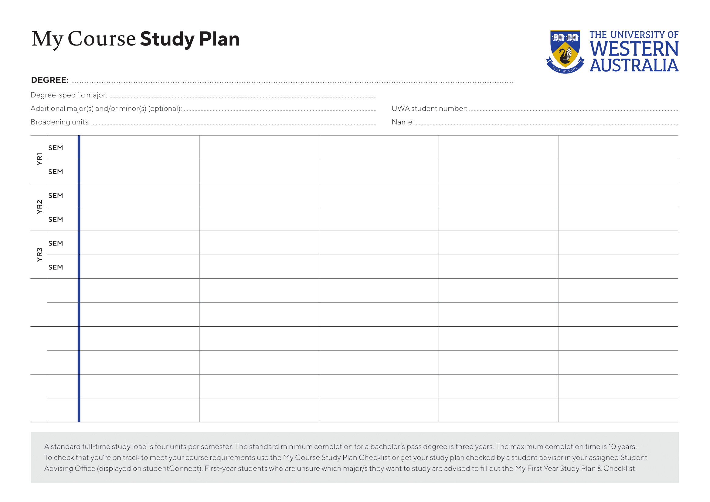
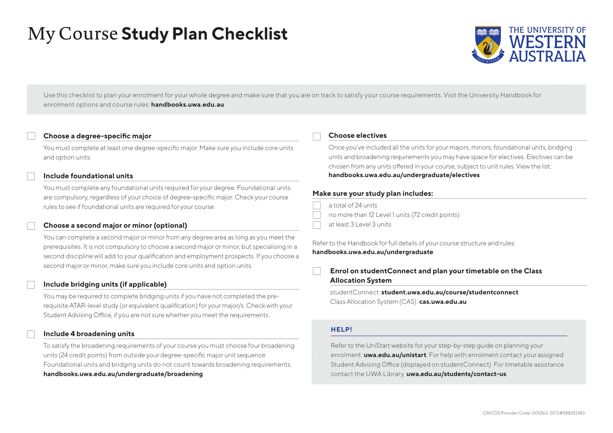

Welcome!
Greetings! We hope you are excited to begin your university experience at UWA! It is an honour for us to have you.
Continue reading by clicking the next icon on the right of this slide to see our next slide which will begin our How-To Course on everything you need to know about enrolling at UWA! You can also navigate from slide to slide by selecting one of the below buttons to navigate to a specific slide.
Are you a year 12 student? Ensure to continuously check the course requirements of the course you wish to enrol in and ensure that you are taking the necessary ATAR prerequisites for that course.
- If you are not taking the prerequisite ATAR subjects that your course requires, there are still ways that you can do them at UWA as bridging units. Consult UWA Student Assistance staff to plan out your course if this is the case.
Step 1: Accepting your UWA Offer
Throughout the next few slides, we'll be going over the entire enrolment process for your undergraduate degree, as well as some course definitions that are handy to know.
- The first step is to accept your UWA offer in your initial offer email. Your email would have been given to the University via. your application or your TISC preferences if you are a year 12 student.
- In your acceptance letter, you will have a student number. You will use this number to create your Pheme account which you will use throughout your degree to access online UWA material.
- Click on "Accept Offer" and create your your Pheme account. You will be asked to create a password and once created, log-in and continue your enrolment online. (Next Slide)
- If you are a domestic student, make sure to keep your Tax File Number handy if you wish to apply for Commonwealth-Supported course payment (HECS-HELP).
Step 2: Majors - Part 1
Now that we've set up our Pheme account, let's take a step back and consider which Major we would like to undertake in our Bachelor's degree.
- At UWA, you have the option of choosing from a wide choice of majors for each bachelor you undertake. As defined by UWA, a major is a structured sequence of units in a particular discipline or field of study.
- You can do up to two majors, and also have the choice of doing one major and a minor, two majors and a minor, or one major and an assortment of electives and/or broadening units.
- The number of majors you do will largely affect the structure of your course. For example, if you take a double major, almost all of the units you choose will be from each major, leaving less room for electives than if you only choose one degree-specific major.
- A minor is a much smaller unit set that is usually composed of only four units that you can optionally take as a part of your course.
Step 2: Majors - Part 2
- The first major you pick will be your degree-specific major and must fall under the course or Bachelor that you are enrolling for.
- For example if you were undertaking a Bachelor of Science, you could choose Data Science as your degree-specific major.
- If you would like to browse the large selection of majors and their units, feel free to browse the UWA undergraduate handbook at handbooks.uwa.edu.au
- Please note: if you are undertaking a second major, you do not need to complete the complementary units for that major, whereas it is necessary to complete ALL units (including complementary) for your degree-specific major.
- For the sake of this guide and as an example, let's say that we are studying Data Science as our degree-specific major, and only completing one major.
Step 3: Understanding Course Requirements and Units - Part 1
Another aspect of enrolling in your degree is selecting your units. In this section we'll be going over the types of units that you'll be making up your degree with and the requirements of your course.
- In order to finish your degree, you must satisfy the requirements of your course. The first requirement being that you complete all the core and complementarity units of your degree-specific major and/or the core units of your second major.
- Achieve 144 credit points throughout the duration of your course. Most units will be worth 6 credit points, and in order to complete your course in 3 years, the load is 4 units per semester (full-time).
- Please note: it is not mandatory to complete your course in 3 years, if you would like to extend one semester or one year, you may distribute your units throughout your degree in order to lighten your unit load per semester.
- Complete at least four units (24 points) outside your degree specific major to satisfy the broadening requirement.
- If you are doing a degree-specific major and a second major, or a degree-specific major and a minor, don't worry! The broadening requirement will most likely already be completed for you by choosing a second major/minor, as those units would count towards your broadening requirement.
Step 3: Understanding Course Requirements and Units - Part 2
- Other course requirements that you should know are that
- You must not complete more than 12 level 1 units throughout your course and
- You must pass at least four units at level 3.
- Each level typically corresponds to the difficulty of the unit and the year it is undertaken. E.g. Level 1 units are usually the easiest in difficulty and are taken in first year.
- Once you have chosen your degree-specific units and/or your second-major or broadening units, you can make up the rest of your units in electives to achieve the credit point.
- Electives range from a wide variety of fun and interesting units, ranging from philosophy in units such as PHIL1003 “God, Mind, and Knowledge” to learning about the universe in SCIE1121 “Our Universe”!
Step 4: Creating a Study Plan
Once you have chosen the majors, minors, broadening units and or electives that you wish to undertake, plan out the units in which you with to enrol using a study plan! Keep in mind that you can only enrol for one calendar year at a time, however you can plan out your entire degree in a study plan.
A study plan is a list of units you want to enrol in over the course of your degree - it may look like this: (Click on either to open a downloadable study plan pdf)
 